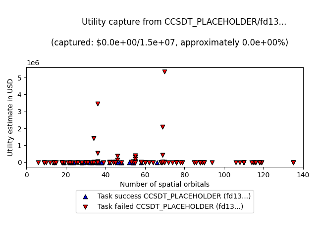
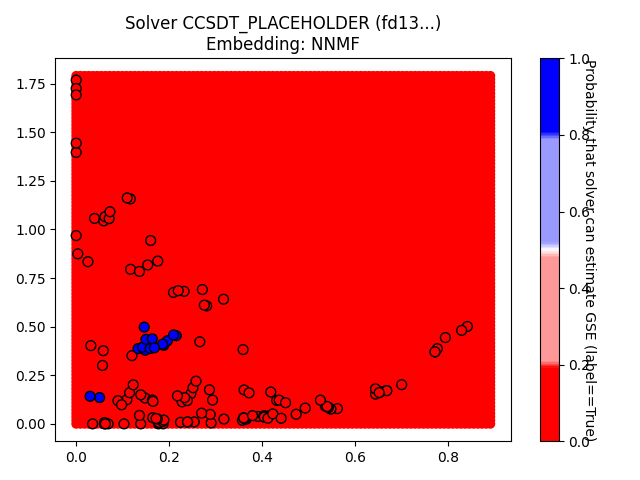
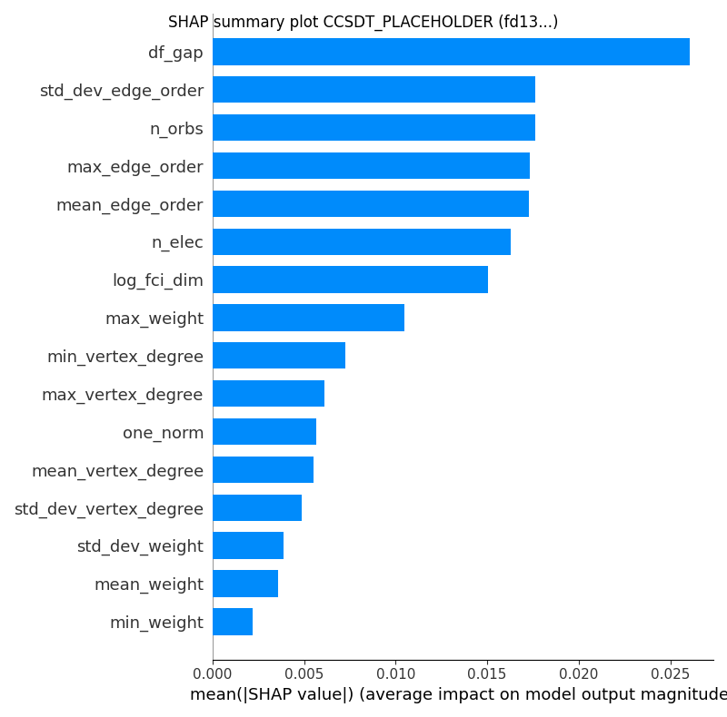

Report based on data from 2025-01-16T14:40:23.264140+00:00
https://github.com/isi-usc-edu/qb-gsee-benchmark
Input data: Hamiltonian_features.csv, last modified Mon Dec 30 16:29:03 2024
Input data: GSEE-HC_utility_estimates_all_instances_task_uuids_v2.csv, last modified Thu Jan 9 12:11:19 2025
Latest creation time for a problem_instance.json file: Thu Jan 16 08:13:11 2025
Latest creation time for a performance_metrics.json file: Thu Jan 16 09:41:20 2025
Latest creation time for a solution.json file: Thu Jan 16 08:27:31 2025
number of problem_instances: 82
problem_instance.json with the most tasks: 16 (mo_n2_pincer/8a3787cc-d3d0-42a8-d9a9-7de2aed45208)
number of Hamiltonians (i.e., tasks): 230
minimum number of orbitals: 6
median number of orbitals: 53.5
maximum number of orbitals: 135

number of unique participating solvers: 4


solver_uuid:2dde727e-a881-44fa-aabf-bba6248e4baf
solver_short_name:SHCI_opt
compute_hardware_type:classical_computer
classical_hardware_details:{'computing_environment_name': 'LCRC Improv (per node)', 'cpu_description': '2x AMD EPYC 7713 64C', 'ram_available_gb': '256GB', 'clock_speed': '2 GHz', 'total_num_cores': 128}
algorithm_details:SHCI with optimized orbitals followed by SHCI+PT
software_details:SHCI Arrow Code (https://github.com/QMC-Cornell/shci).
performance_metrics_uuid: 5152b115-de8c-4ede-ad28-6a1e0b0d9203
creation_timestamp: 2025-01-16T14:40:23.264140+00:00
number_of_problem_instances: 82
number_of_problem_instances_attempted: 41
number_of_problem_instances_solved: 41
number_of_tasks: 230
number_of_tasks_attempted: 162
number_of_tasks_solved: 149
number_of_tasks_solved_within_run_time_limit: 162
number_of_tasks_solved_within_accuracy_threshold: 149
max_run_time_of_attempted_tasks: 55299.387
sum_of_run_time_of_attempted_tasks: 1138067.4269999997
solvability_ratio: 0.9998
f1_score: [0.5691056910569106, 0.8427299703264095]
ml_metrics_calculator_version: 1


solver_uuid:16537433-9f4c-4eae-a65d-787dc3b35b59
solver_short_name:DMRG_Niagara_cluster_lowest_energy
compute_hardware_type:classical_computer
classical_hardware_details:{'computing_environment_name': 'Niagara Cluster, Compute Canada', 'cpu_description': '40 Intel "Skylake" cores at 2.4 GHz or 40 Intel "CascadeLake" cores at 2.5 GHz', 'ram_available_gb': '202 GB (188 GiB)', 'clock_speed': '2.4 GHz or 2.5 GHz', 'total_num_cores': 40}
algorithm_details:DMRG with the lowest variational energy obtained so far.
software_details:Block2 v0.5.3rc16 with dmrghandler, commit version d603fdc6409fc194a416aa3a519362d5d91790d9 or later.
performance_metrics_uuid: c0016151-2581-4ef6-8531-a032ef34174a
creation_timestamp: 2025-01-16T14:40:23.264140+00:00
number_of_problem_instances: 82
number_of_problem_instances_attempted: 76
number_of_problem_instances_solved: 43
number_of_tasks: 230
number_of_tasks_attempted: 192
number_of_tasks_solved: 142
number_of_tasks_solved_within_run_time_limit: 192
number_of_tasks_solved_within_accuracy_threshold: 142
max_run_time_of_attempted_tasks: 80820.729907066
sum_of_run_time_of_attempted_tasks: 1824772.0337238186
solvability_ratio: 0.3377
f1_score: [0.865979381443299, 0.9022556390977443]
ml_metrics_calculator_version: 1


solver_uuid:fd13c864-baf1-44de-b52d-0e5dd69f647a
solver_short_name:CCSDT_PLACEHOLDER
compute_hardware_type:classical_computer
classical_hardware_details:{'cpu_description': 'CCSDT_PLACEHOLDER_cpu_description'}
algorithm_details:CCSDT_PLACEHOLDER_algorithm_details
software_details:CCSDT_PLACEHOLDER_software_details
performance_metrics_uuid: 4271a06e-f531-4333-8477-b70c36c673fa
creation_timestamp: 2025-01-16T14:40:23.264140+00:00
number_of_problem_instances: 82
number_of_problem_instances_attempted: 4
number_of_problem_instances_solved: 4
number_of_tasks: 230
number_of_tasks_attempted: 53
number_of_tasks_solved: 53
number_of_tasks_solved_within_run_time_limit: 53
number_of_tasks_solved_within_accuracy_threshold: 53
max_run_time_of_attempted_tasks: 3600.0
sum_of_run_time_of_attempted_tasks: 190800.0
solvability_ratio: 0.0068
f1_score: [1.0, 1.0]
ml_metrics_calculator_version: 1




solver_uuid:5dad4064-cd11-412f-85cb-d722afe3b3de
solver_short_name:DF_QPE
compute_hardware_type:quantum_computer
algorithm_details:{'algorithm_description': 'Double factorized QPE resource estimates based on methodology of arXiv:2406.06335. Note that the truncation error is not included in the error bounds and that the SCF compute time is not included in the preprocessing time. Ground-state overlap is taken to be that estimated for the dominant CSF as estimated by DMRG and that this DMRG runtime is not included in the classical compute costs.', 'algorithm_parameters': {'overlap_csv': 'overlaps.csv', 'sf_threshold': 1e-12, 'df_threshold': 0.001, 'max_orbitals': 70}}
software_details:[{'software_name': 'pyLIQTR', 'software_version': '1.2.1'}, {'software_name': 'qb-gsee-benchmark', 'software_version': '0.1.0a2.dev71+g5d9efab.d20241230'}, {'software_name': 'Python', 'software_version': '3.10.12 (main, Nov 6 2024, 20:22:13) [GCC 11.4.0]'}, {'software_name': 'qualtran', 'software_version': '0.2.0'}]
quantum_hardware_details:{'quantum_hardware_description': 'Optimistic superconducting hardware model based on that described in https://arxiv.org/abs/2011.03494.', 'quantum_hardware_parameters': {'num_factories': 4, 'physical_error_rate': 0.0001, 'cycle_time_microseconds': 1}}
logical_resource_estimate_solution_uuid:72dea71b-fb03-43f0-8086-eb37605ba3db
logical_resource_estimate_solver_uuid:f2d73e1f-3058-43c4-a634-b6c267c84ff1
performance_metrics_uuid: 5c88eca6-6e53-4cb5-927a-9f7cd879f4b9
creation_timestamp: 2025-01-16T14:40:23.264140+00:00
number_of_problem_instances: 82
number_of_problem_instances_attempted: 24
number_of_problem_instances_solved: 3
number_of_tasks: 230
number_of_tasks_attempted: 163
number_of_tasks_solved: 26
number_of_tasks_solved_within_run_time_limit: 26
number_of_tasks_solved_within_accuracy_threshold: 163
max_run_time_of_attempted_tasks: 233737829.40462503
sum_of_run_time_of_attempted_tasks: 1180589418.3385448
solvability_ratio: 0.0232
f1_score: [0.9950738916256158, 0.9629629629629629]
ml_metrics_calculator_version: 1